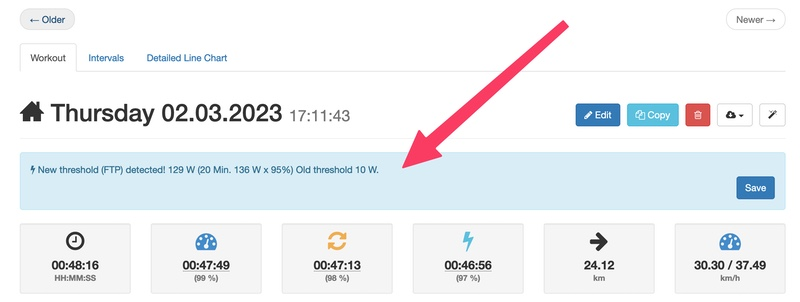
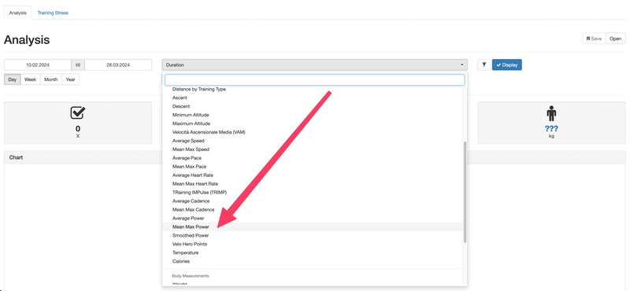

Glossary
Functional Threshold Power (FTP)
Your Functional Threshold Power (FTP) is the maximum average power that you can hold for one continuous hour.
There is no formal model or protocol for establishing it, most people use rules of thumb like FTP is 95% of 20 minute power, or they use the best power from a 40km TT.
FTP = 20 min. peak power * 0.95
For example, if you were to ride a 40k time trial in 60 minutes at an average power of 270W, your FTP would be 270W.
FTP is the keystone to training with power. It allows Velo Hero to determine how hard a ride is for you. You doing 280W might feel much different than someone less trained doing 280W and FTP allows us to gauge just how hard segments, rides, and even weeks or months of training were for you!
You can enter your FTP under "Body measurements": https://app.velohero.com/body/edit/new - aware period!
Tip: Save your first FTP entry far in the past.
Automatic Threshold Calculation (FTP)
In order to make it a little easier, there is an automatic threshold detection. The function you can activate in the settings (as default on): https://app.velohero.com/settings/display
Workouts with more than 20 minutes power are considered for the calculation.
If a higher FTP is detected, a message is displayed and you can save the new value:

If no higher FTP was detected, no message is displayed.
If you want to analyze your maximum power over several workouts, we recommend the "Mean Max Power" analysis (https://app.velohero.com/charts). This will also show you your best 20 minutes and 60 minutes per workout.

Links
- YouTube: How To Calculate Your FTP (Functional Threshold Power)
- YouTube: What is FTP or Functional Threshold Power
Smoothed Power
When you ride with a power meter, you'll notice how your power jumps all over the place based on the terrain, grade, wind, and other factors. When you stop pedalling power drops to zero immediately. Your heart rate may take 30 seconds or so to recover.
In truth, although the power meter says zero watts when you stop, the body's physiological response continues for roughly 30 seconds, as HR drops, breathing recovers and more complex energy system processes continue.
This means that if we want to use power output as a measure of training stress we will also need to translate those simplistic power readings into something that reflects the associated physiological processes and their half-lives.
This is what Dr. Andrew Coggan's Normalised Power, Dr. Phil Skiba's xPower and Velo Hero's Smoothed Power are doing; they "smooth out" the power data to reflect the underlying physiological processes.
The underlying mathematics is slightly different. However, all formulas are much more accurately than just taking a simple average.
TRaining IMPulse (TRIMP)
TRIMP is a method for quantifying aerobic training load. It was originally defined as the product of training volume, measured in minutes, and training intensity, measured as average heart rate (beats per minute or bpm).
For example, 50 min at 140 bpm:
TRIMP = 50 × 140 = 7000
Velo Hero Level
Velo Hero Level is the way at Velo Hero of showing how difficult a ride was as compared to your FTP.
The Velo Hero Level is simply the ratio of the Smoothed Power to your Functional Threshold Power (FTP).
For example, if your Smoothed Power is 180 W and your FTP at the time is 210 W, then the Velo Hero Level for that workout would be 0,86.
Velo Hero Points
Velo Hero Points are the Velo Hero Level multiplied by the duration. With Velo Hero Points you get an overall stress score. The more points you have collected the bigger impact it will have had and likely the more recovery we will need the day after. The guide below will tell you how long after a workout it will take you to fully recover:
- Less than 150 - low --> recovery generally complete by following day
- 150-300 - medium --> some residual fatigue may be present the next day, but gone by 2nd day
- 300-450 - high --> some residual fatigue may be present even after 2 days
- Greater than 450 - very high --> residual fatigue lasting several days likely
Velocità Ascensionale Media (VAM)
VAM is the abbreviation for the Italian term velocità ascensionale media, translated in English to mean "average ascent speed" or "mean ascent velocity", but usually referred to as VAM. The term, which was coined by Italian physician andcycling coach Michele Ferrari, is the speed of elevation gain.
VAM is calculated the following way:
VAM = (metres ascended x 60) / Minutes it took to ascend
Velo Hero calculates VAM slightly differently:
VAM = (metres ascended x 60) / Total duration
Velo Hero unfortunately does not have the duration of the ascend, so the total duration is taken. This is of course not the "real" VAM but also offers a good guideline.
Examples:
- 1800+: Lance Armstrong during the EPO era.
- 1650-1800: Top 10 / Tour de France GC or mountain stage winner.
- 1450-1650: Top 20 / Tour de France GC; top 20 on tough mountain stage.
- 1300-1450: Finishing Tour de France mountain stages in peloton
- 1100-1300: The Autobus Crew